5 events, 9 points
Church
Worship, faith, and service.
About my Church experiences
My Church experiences allow me to strengthen my faith, reflect on my beliefs, and connect with others through worship and fellowship. Through these activities, I hope to grow spiritually, develop a deeper understanding of my faith, and learn how to apply Christian values in my everyday life.
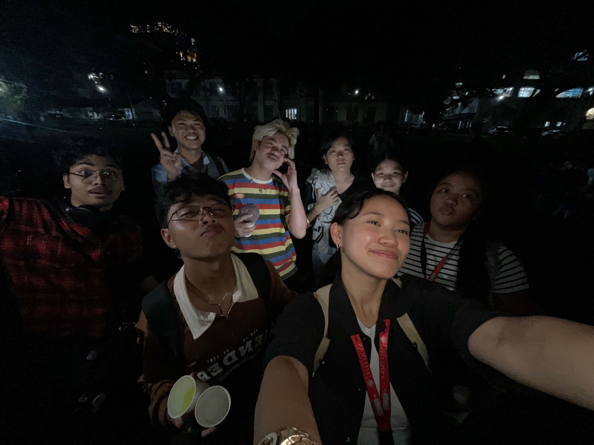
Galilean Fellowship
September 24, 2026, 5:30 PM
1 point
Galilean Fellowship
September 24, 2026, 5:30 PM 1 pointReflection
The Galilean Fellowship was held on September 24, 2026, at the Silliman University Amphitheater. It was attended by CHS students, and I participated with my friends and classmates from CHS 1-EE. At the beginning of the activity, we sang and danced along to songs, including “This Is the Day.” After that, we went to our assigned groups and formed a circle where we introduced ourselves to one another. We then read Bible verses and had a question-and-answer session about them. The activity ended with snacks, a closing prayer, and everyone going home. My role in the activity was simply as a participant, but I actively joined the different parts of the fellowship.
Before the activity, I expected it to be a little boring because I thought it would mostly consist of lectures. However, it turned out to be a fun and interactive experience. One thing I learned from the activity was always to remember things with gratitude and to appreciate what I have. It reminded me that the things I have now are not something I achieved completely on my own, because there are people who helped me along the way. During the activity, I was excited to see what would happen next, and afterward, I felt closer to God and to the friends who have helped me and continue to be there for me. I also realized that there are many things I have right now that I have not really expressed my appreciation for, especially toward the people who helped me achieve them.
The experience made me look at the people and things around me differently. I realized that gratitude should not only be something I feel privately but something that I should also express to the people who have been there for me. I can apply what I learned by becoming more appreciative of the people who are willing to stay by my side and help me when I face uncertainty in life. I also want to continue being involved in activities where I can strengthen my relationship with God and with the people around me. If I were to participate in the activity again, I would try to be even more involved and pay closer attention to the lessons being shared so I could understand and reflect on them more deeply.
Because of this activity, I am more aware of the people who have helped me become who I am today, and I am reminded to appreciate them while they are still by my side.
Evidence of participation
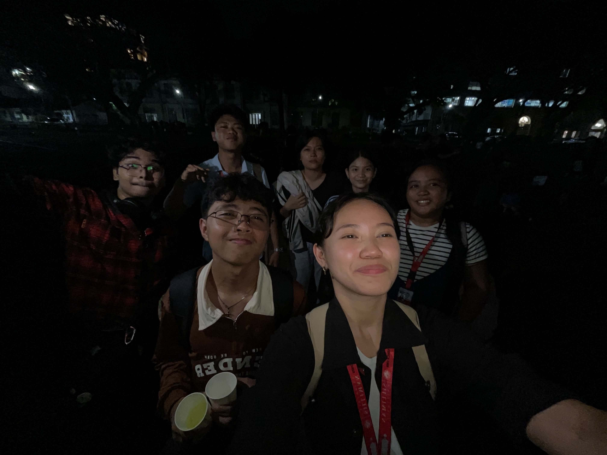
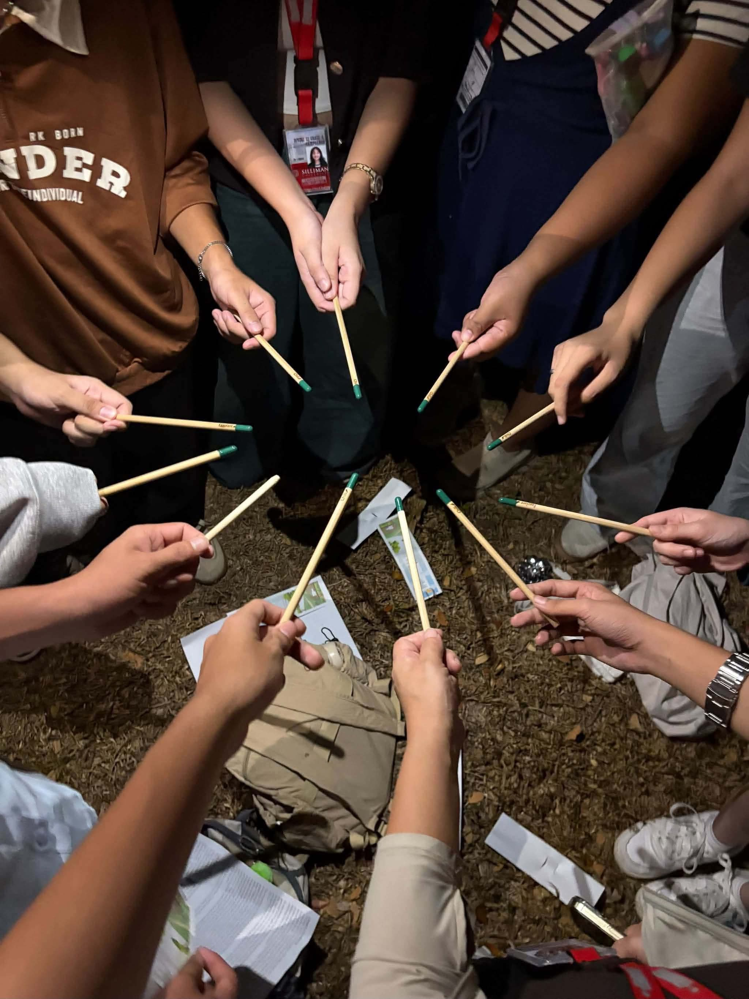
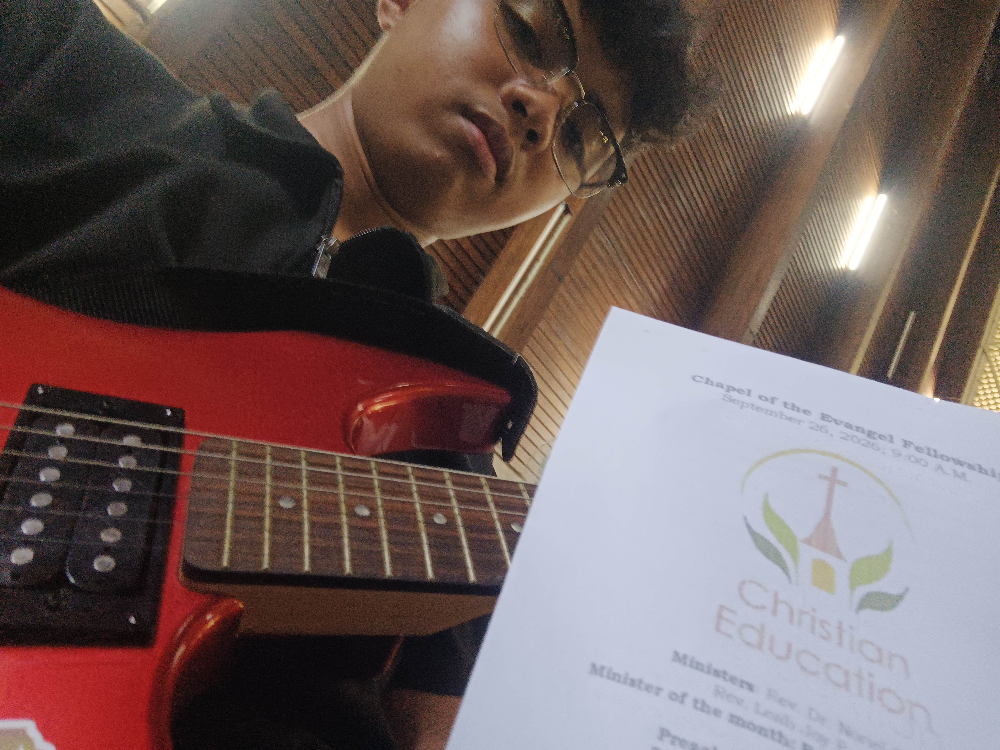
Choir for Sunday Preach
September 27, 2026, 9:00 AM
2 points
Choir for Sunday Preach
September 27, 2026, 9:00 AM 2 pointsReflection
On September 27, 2026, I participated as a guitarist in a Sunday service at the Chapel of Evangel in Silliman University. Before the service started, my fellow choir members and I rehearsed and prepared for the service. During the service, we accompanied the hymns with the choir, and we also played the song “God Will Make a Way.” I participated together with my friend Lyrico, our CHS instructor Rev. January Alpuerto, and the other choir members. My main responsibility was to play the guitar and do my part while working together with the rest of the choir.
Before the activity, I was really nervous because I kept overthinking that I might mess something up while playing the guitar. However, I learned that panicking during a performance would only make things worse, so I needed to stay calm and trust myself. I also learned more about the message of the song “God Will Make a Way.” It reminded me that even when I feel like I cannot do something or become nervous about it, God can still make a way for me to do better. My values of faith, teamwork, and responsibility were also expressed through the activity. I showed faith by trusting God's plan, teamwork by rehearsing and practicing with the choir, and responsibility by doing my part and helping others do theirs.
This experience changed the way I think about performing in front of people. Before, I always thought about playing for them, but after this experience, I started thinking about playing for myself, for God, and for the better. I want to continue participating in the choir whenever I have the opportunity, while becoming more willing to contribute my ideas and participate actively. The experience also helped me become closer to God, one step at a time, while giving me more experience playing with a choir. If I were to do this activity again, I would prepare more, stop overthinking, and be more willing to share my ideas. For example, I had an idea of dividing the choir into main vocals and second voices, but I was too shy to suggest it. Next time, I want to avoid letting good ideas go to waste just because I am nervous about sharing them.
Because of this activity, I am more willing to trust God's plan, stay calm when facing pressure, and continue improving instead of letting fear and overthinking stop me from doing what I can.
Evidence of participation
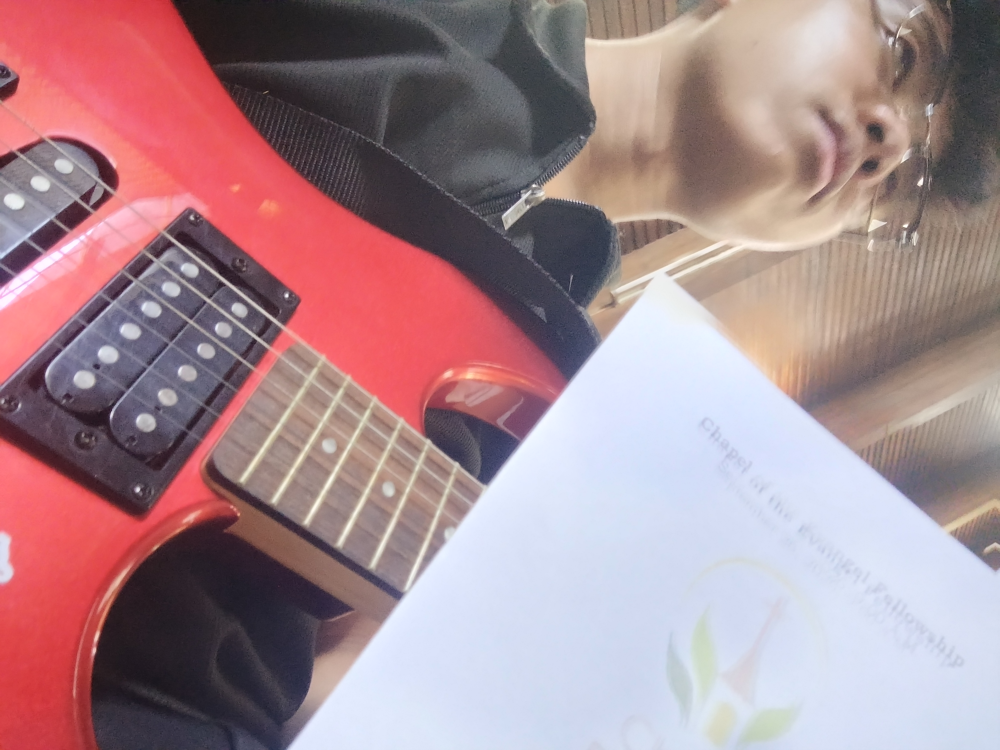
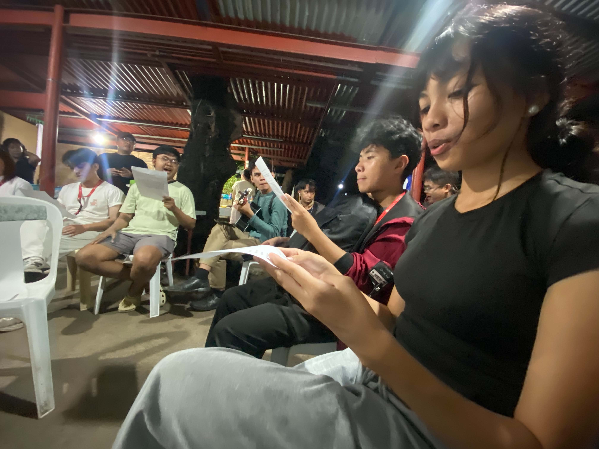
Bible Study
October 7, 2026, 7:00 PM
1 point
Bible Study
October 7, 2026, 7:00 PM 1 pointReflection
I attended a Bible study with Leslie and Krisha at a place near NORSU Main Campus. I forgot which book of the Bible the discussion was from, but the topic was about baptism and repentance. The organizers explained that baptism is the termination of our old selves, while repentance is a change of mind. We also sang a song together, which I enjoyed, although I was not entirely comfortable with some parts of how they conducted the gathering.
Since I am a Catholic, I was not used to their way of worshipping. After singing, they would read the lyrics line by line and shout “Amen” after each line. The tone they used while reading also felt unfamiliar to me because, where I come from, that kind of tone can sometimes be interpreted as mocking or disrespectful. However, I understand that this was my first time experiencing their way of worshipping, and I do not intend to offend anyone by sharing how I felt. Despite my initial discomfort, I learned that different religions and communities have different ways of expressing their faith and love for God, and that is okay.
Moving forward, I want to be more open to experiencing different ways of worshipping God. I realized that I should not immediately judge a practice just because I am unfamiliar with it. Perhaps, with more exposure and understanding, I will become more comfortable participating in gatherings like this. Although I felt uncomfortable at first, I still enjoyed the experience, and it helped me feel closer to God, one step at a time.
Because of this activity, I am more open to understanding different ways of worshipping God, even when they are unfamiliar to me, and more willing to appreciate the different ways people express their faith.
Evidence of participation
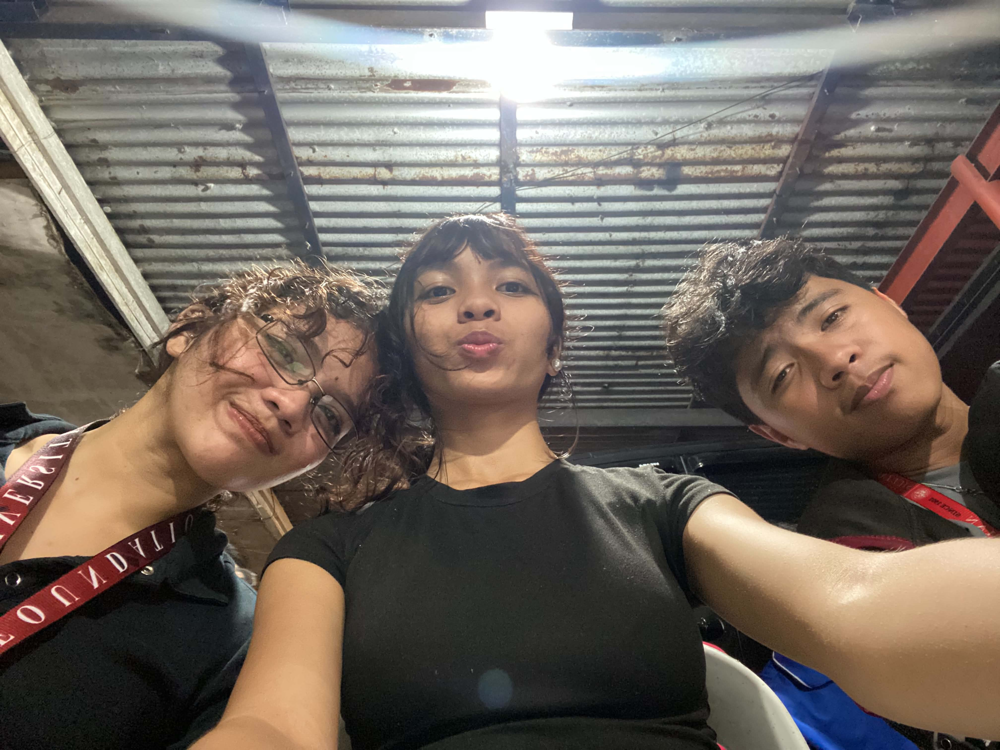
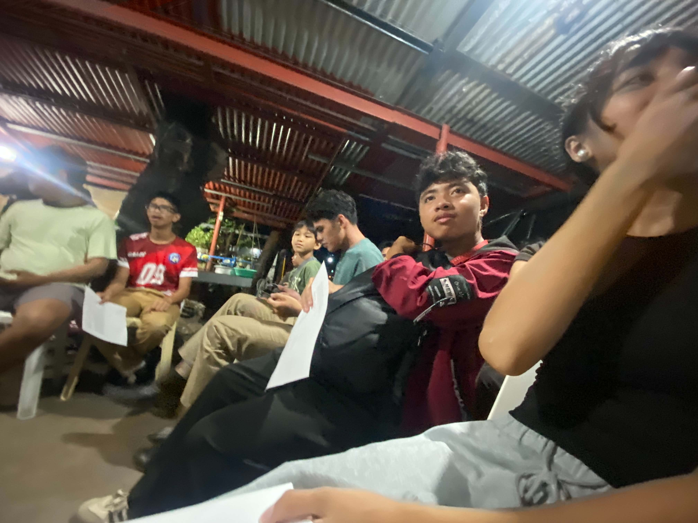
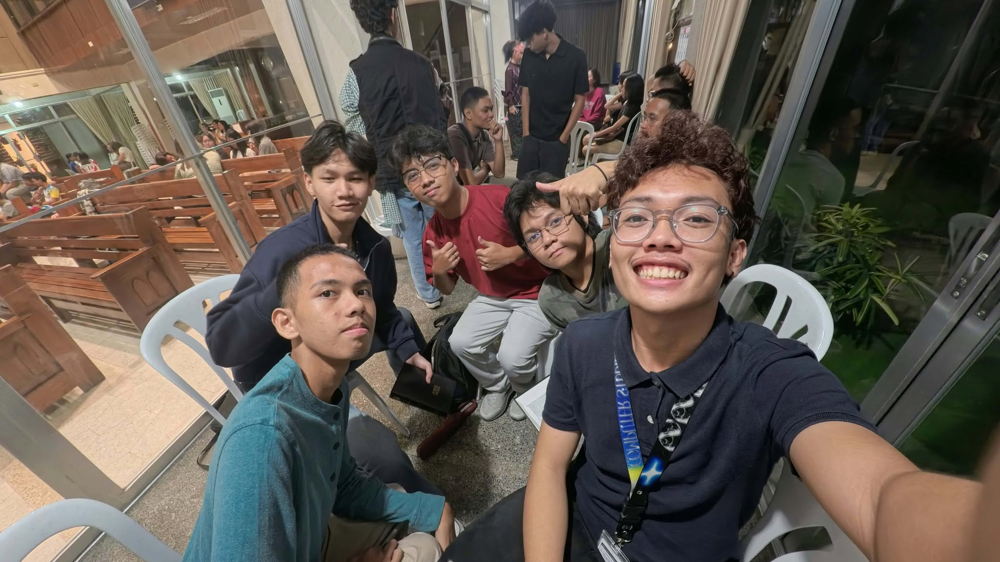
Youth Friday Night Small Groups Bible Study
October 9, 2026, 7:30 PM
3 points
Youth Friday Night Small Groups Bible Study
October 9, 2026, 7:30 PM 3 pointsReflection
I attended a Bible study at Dumaguete Christian Church, where we discussed Jesus' sacrifice for our sins. Compared to my previous Bible study experience, this gathering felt more solemn and familiar to me as a Catholic. I also learned that the church holds a Chinese-language worship service in the morning. The pastor and the church members welcomed us warmly, which made me feel comfortable and relaxed. After the worship service, we were divided into groups, and I became the leader of one of the subgroups. We discussed two questions about how we understand Jesus' sacrifice and what it means to live a life of gratitude for what He has done for us.
One question asked us to imagine how we would react if we were children learning for the first time that Jesus died for our sins. As a group, we discussed how this could feel like a responsibility we never asked for or even a sense of guilt for something we did not fully understand. We also wondered what would happen if we had been born into a different religion or without any religious influence. This made me think more deeply about my own faith and how I came to believe in God. However, the question that affected me the most was about how much we were willing to sacrifice to live a life of gratitude for Jesus' sacrifice. One of my groupmates asked something along the lines of how far we wanted to go in living that kind of life. It made me realize that although I always tell myself that I believe in Jesus and trust God, I rarely question the extent to which I am willing to make sacrifices for my faith. I also realized that people experience faith differently, and the sacrifices they are willing to make may vary depending on their spiritual journey.
Moving forward, I want to reflect more on what it truly means to live according to my faith instead of simply saying that I believe in God. I want to understand how I can express my gratitude for Jesus' sacrifice through my everyday actions and decisions. I know that faith is not just about how much I am willing to give up, but also about how I live, how I treat others, and how I remain faithful to God even when it is difficult. I may not have a definite answer to how much I am willing to sacrifice, but I believe that asking myself this question is already a step toward understanding my faith more deeply.
Because of this activity, I am more aware of the depth of my faith and more willing to question whether my actions reflect the trust and gratitude I say I have toward God. It reminded me that faith is not only something I believe in but also something I should continue to understand and live out.
Evidence of participation
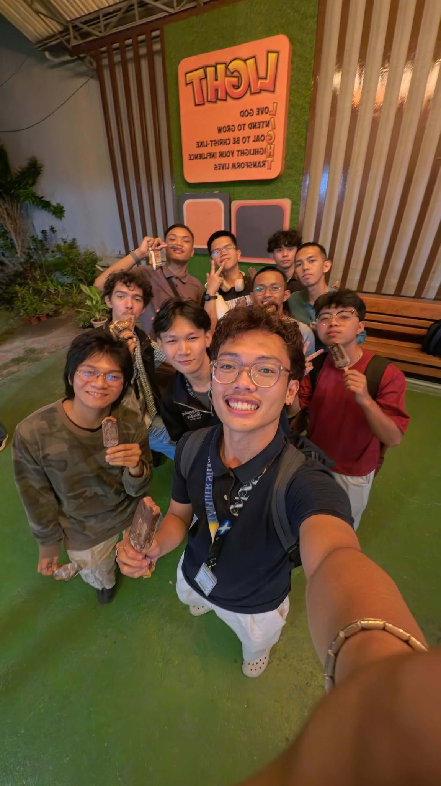
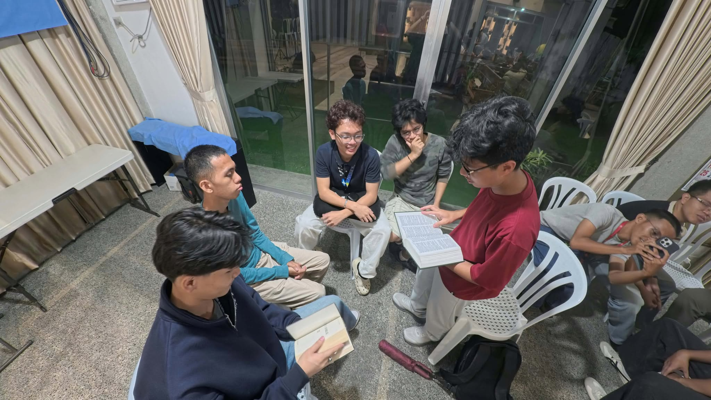
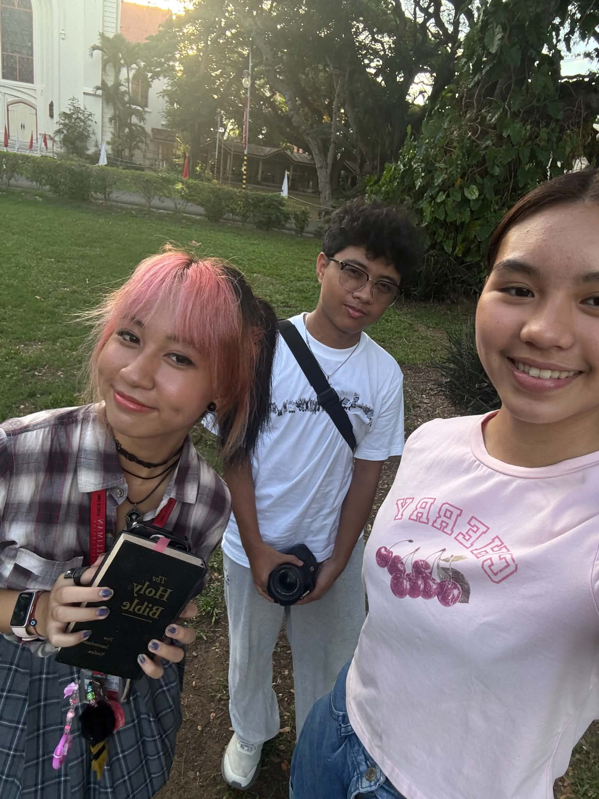
Bible Study with Samantha
October 16, 2026, 4:00 PM
2 points
Bible Study with Samantha
October 16, 2026, 4:00 PM 2 pointsReflection
During this Bible study, Samantha asked us what message stood out to us from reading Ephesians 1:15–23. It was a relaxed and simple gathering with only three of us present: me, Samantha, and Nichole. I also served as the videographer for the activity, documenting our time together while participating in the discussion.
My answer focused on being grateful for God's blessings and thankful for Jesus' sacrifice for us. This reflection was connected to the Bible study hosted by Davin, where I questioned how much I was willing to sacrifice to live according to my faith. It was also influenced by our Galilean Fellowship, which had the theme “Remembering with Gratitude.” These experiences helped me understand that gratitude is not just about acknowledging what God has done for us but also about remembering His goodness and allowing that appreciation to influence how we live. Even in a small and relaxed gathering, I was able to reflect on my faith and recognize the importance of being thankful.
Moving forward, I want to be more intentional about remembering God's blessings instead of taking them for granted. I also want to apply the lessons I have learned from these Bible studies by expressing my gratitude through my actions and how I treat other people. Whether through simple everyday experiences or moments of spiritual reflection, I want to keep reminding myself of God's goodness and Jesus' sacrifice.
Because of this activity, I am more aware of the importance of gratitude in my spiritual life and more encouraged to remember God's blessings and Jesus' sacrifice, allowing them to guide how I live out my faith.